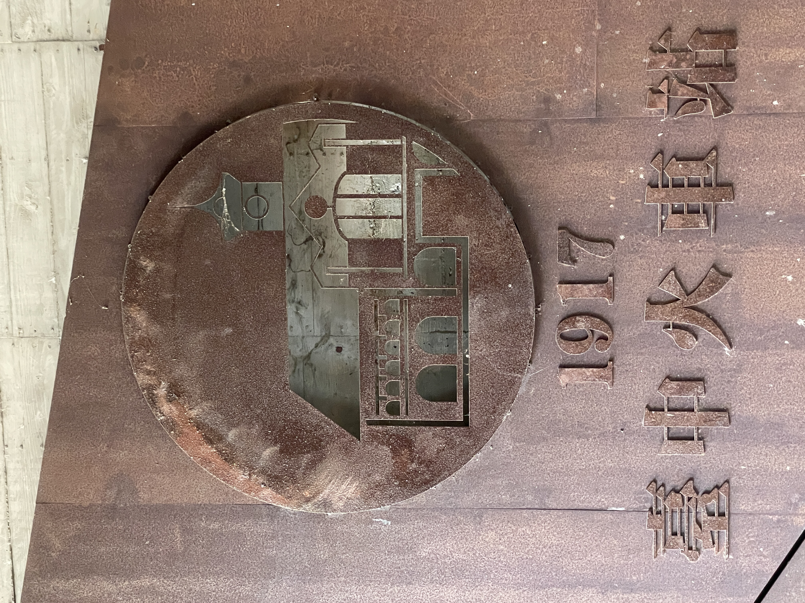

先有雞還是先有蛋 先有鐵路還是先有車站
憶台中，台中驛
三代同堂
說到台中車站就得從台灣鐵路講起，台灣鐵路的建築計畫最早是由福建巡撫兼台灣學政丁日昌所提議，不過被清廷以鐵路需費過鉅、煤礦尚未有效開採等因素而駁回，等到劉銘傳接手台灣巡撫後才開始積極發展鐵路。政權轉移至日治後總督府也認為鐵路為開發台灣資源的首要工作，便積極建造全島鐵路及相關建設。1896年台灣總督樺山資紀決定興建西部縱橫鐵路，為了因應政策，在1905年興建了台中停車場（補充說明：日治時期對於車站的主要稱法有"停車場"、"乘降場"以及"驛"），此時通往中部的鐵路逐漸成形，同年的3月26日葫蘆墩（今豐原）至台中段鐵路開通，也因為縱橫鐵路，總督府也特別重視台中停車場的發展。
此時的台中車站為木造的小屋，開始帶動周邊經濟的興起。1908年縱貫鐵路全面通車，加上台灣省政府曾設在中興新村、台灣省諮議會設於霧峰，隨著都市及鐵路的發展，使台中停車場的地位隨之躍升，隨後陸續興建火車頭的機關庫、設有臺北保線區臺中派出所、改制為台中保線區及興建保線事務所（今台灣鐵路管理局前身）等相關擴增，但實在感不上都市的蓬勃發展及運輸量的提升，第一代車站漸漸不敷使用，最終面臨改建命運。
1917年3月31日第二代台中車站完工，名為台中驛。由臺灣總督府交通局鐵道部工務課設計，類似於辰野式建築風格，可說是當時西部幹線的重要驛站典範，早期的台中驛是中台灣的交通樞紐，外賓到訪時地方政府常召集民眾和樂隊在此列隊歡迎，省長來訪、大專兵上成功嶺、三輪車請願運動……舊台中車站乘載了各式各樣的回憶。第二代台中車站包含舊前站（今台中市中區）與舊後站（今台中市東區），舊後站原為糖業鐵路車站。值得一提的是車站鐘塔與屋牆上的古典式雕刻，仔細看會發現是以臺灣水果作爲主題，許多浮雕採用了從日本引進的「開模印花」，這個工法被臺灣工匠稱爲「番仔花｣，原理是將石膏或水泥澆灌入事先製作好的模型，並預埋木板、鐵絲等材料增加强度，乾硬後便取出。這麽一來，便不再需花費大量人力時間，在一根根柱子上慢慢地進行雕刻，而是可以在生產出許多零件後，再到工地進行組裝，大大地縮短了工期。

1995年臺中市因鐵路地下化想拆除舊台中車站，然而老車站與居民有太多感情，所以在同年的10月1日由鐵道文化協會等十二個文史團體組成之「推動台灣火車站保存再生行動聯盟」推動台灣西部老車站保存與再生活動，最終經過文史團體、當地居民的努力，舊車站被列定為國定古蹟。2016年第三代車站完工了，在新車站規畫時也一並把舊車站規劃進去，而在近幾年被發現原來舊台中車站鐵路餐廳的後面居然是第一代車站殘留的遺跡「台中停車場事務室」，造就了今日所看到的三代同堂車站。
到了車站當然會有人盛情迎接，台中火車站將當代藝術引入交通場站之中，當我們走到台中火車站前的廣場上，一個矗立於此，巨大的彩色身影便會馬上進入我們的眼簾。這個近三層樓高的裝置藝術是來自德國藝術團隊Inges Idee的作品「期待」，描繪一個期待地凝視著通往新火車站大樓樓梯的男孩。雖然周圍熙熙攘攘，但雕塑散發出平靜和專注，可以解釋為對於即將到來旅程的「期待」或對熟人即將來訪的「期待」。設計團隊也提到，雕塑的顏色、大小和方向會引導人們關注新舊火車站之間的空間，而構成人物的環形部件則喚起了速度和流動性。醒目的男孩加上位於二樓的三部曲作品生命之樹、大地之心和天空的眼睛以及可愛的水逗娘，形成了特別的迎賓團，而且它們現在也是社交媒體上代表台中的名人之一喔！